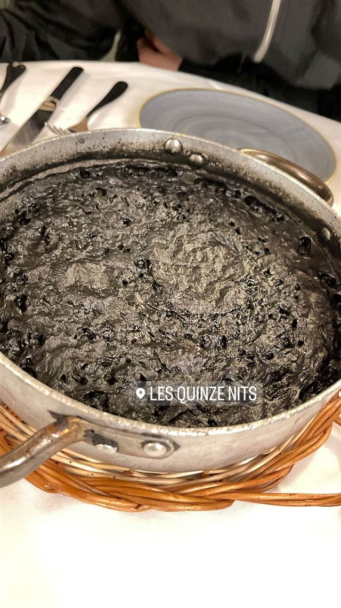
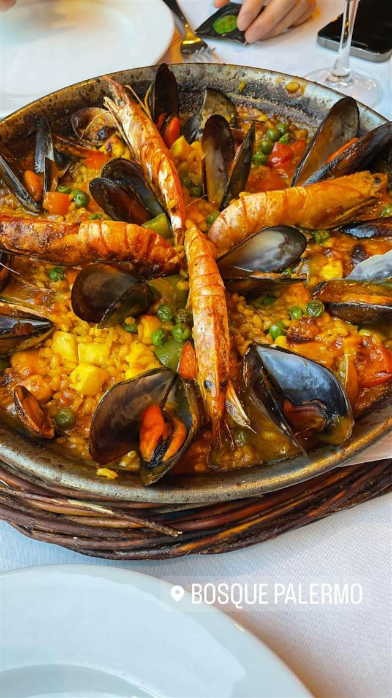

スペイン · スペイン料理 · バリ
Les Quinze Nits
プラサ・レイアル広場に面した老舗のイカ墨パエリア
LES QUINZE NITS
Les Quinze Nitsはバルセロナの人気レストラングループ「Andilana」が展開する最初期の店舗の一つで、優雅なプラサ・レイアル広場に面したロケーションが魅力。イカ墨パエリアなど伝統的なスペイン料理を手頃な価格で楽しめることから地元でも定番の存在。
TRIVIA
豆知識
- 広場の景色を望む黒いテラスは姉妹店La Crema Canelaとお揃いにリニューアルされた
REVIEWS
世間の評判
3.6Googleマップ
広場を望む立地とコスパの良さの評判
- レイアール広場を望む立地と手頃な価格を評価する声が多いという店
- 混雑時は待ち時間がかなり長く接客が行き届かないという声も複数ある
Tripadvisor 口コミ6428件
| 創業 | 1994年頃開業（2019年に25周年を祝ったとの記録あり） |
|---|---|
| 系譜 | バルセロナのレストラングループ「Grup Andilana」創業初期の1店舗 |
| 看板 | イカ墨パエリアなど伝統的なカタルーニャ・スペイン料理 |
| こだわり | 上質な素材を使い伝統的なレシピをじっくり調理 |
| どこから | 海外 |
| 行くなら | 行列 |
| 場所 | リセウ駅 (L3) Plaça Reial 6, 08002 Barcelona, Spain |
| メモ | プラサ・レイアル広場に面したテラス席が人気で行列ができることも多い |
食べたもの：イカ墨パエリア
NEARBY
近い店・同じ系統の店
-
 ★
スペイン料理 池尻大橋
ボラーチョ
店名は「酔っぱらい」の意味、深夜3時までタンシチューが楽しめる
夜 ¥5,000～¥5,999
★
スペイン料理 池尻大橋
ボラーチョ
店名は「酔っぱらい」の意味、深夜3時までタンシチューが楽しめる
夜 ¥5,000～¥5,999
-
 スペイン料理 広尾
Gracia（グラシア）
三ツ星「サンパウ」出身シェフ監修、ビブグルマンのガストロバー
昼 ¥4,000～¥4,999 夜 ¥6,000～¥7,999
スペイン料理 広尾
Gracia（グラシア）
三ツ星「サンパウ」出身シェフ監修、ビブグルマンのガストロバー
昼 ¥4,000～¥4,999 夜 ¥6,000～¥7,999
-
 スペイン料理 渋谷
XIRINGUITO Escriba SHIBUYA（チリンギート エスクリバ）
直火のみで17分炊き上げるバルセロナ仕込みのパエリア
昼 ¥2,000～¥2,999 夜 ¥5,000～¥5,999
スペイン料理 渋谷
XIRINGUITO Escriba SHIBUYA（チリンギート エスクリバ）
直火のみで17分炊き上げるバルセロナ仕込みのパエリア
昼 ¥2,000～¥2,999 夜 ¥5,000～¥5,999
-
 スペイン料理 表参道駅
表参道 BACCHUS -バッカス-
赤海老の旨みたっぷり、魚介パエリアが看板の地中海料理店
昼 ¥1,000～¥1,999 夜 ¥4,000～¥4,999
スペイン料理 表参道駅
表参道 BACCHUS -バッカス-
赤海老の旨みたっぷり、魚介パエリアが看板の地中海料理店
昼 ¥1,000～¥1,999 夜 ¥4,000～¥4,999
-
 スペイン料理 二重橋前駅・日比谷駅
ADRIFT by David Myers
ミシュラン店出身シェフが仕立てるカリフォルニア風パエリア
昼 ¥1,000～¥1,999 夜 ¥5,000～¥5,999
スペイン料理 二重橋前駅・日比谷駅
ADRIFT by David Myers
ミシュラン店出身シェフが仕立てるカリフォルニア風パエリア
昼 ¥1,000～¥1,999 夜 ¥5,000～¥5,999
-

スペイン料理 ウルジェイ駅 (L1) Restaurante Bosque Palermo ガリシア・カタルーニャ風のパエリアとタコ料理